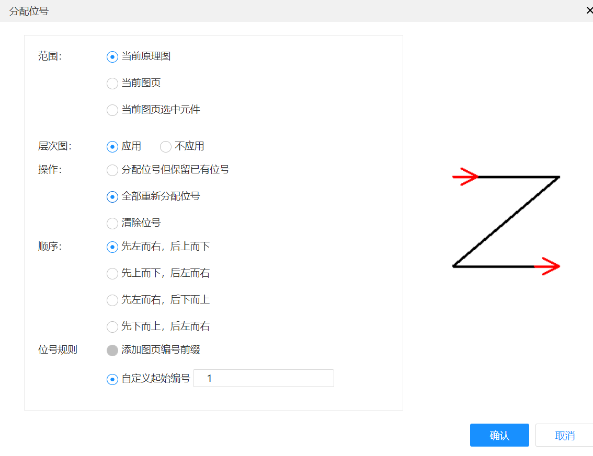
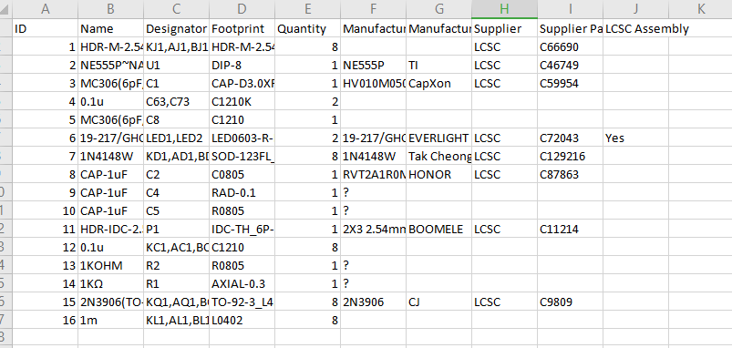
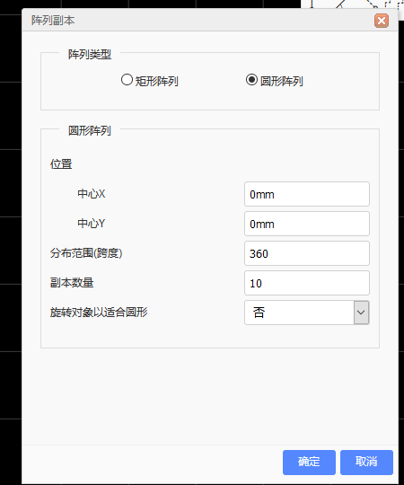
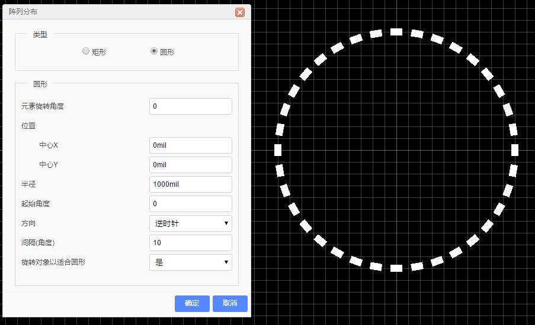
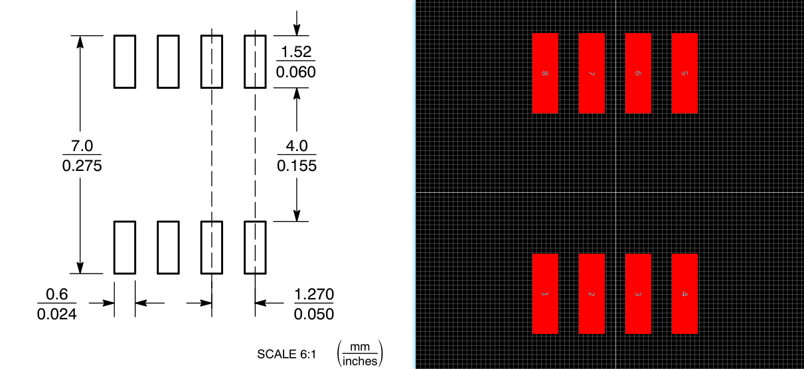
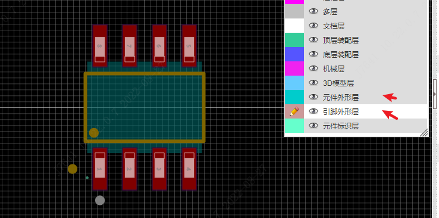
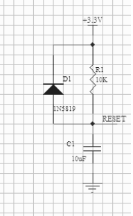

版权所有，请勿转载。--Demoland 陈先柱
PCB设计_基于立创EDA专业版 一：PCB设计基础1. 新建工程2. 元器件搜索3.封装4. 原理图设计5. PCB设计附5. 导入文件5.1 导入图片5.1.1 原理图中导入图片5.1.2 PCB中导入图片5.2 导入DXF5.3 导入AD文件※注意事项※导入步骤1.AD文件导出为ASCII文件格式导入Alitum库文件批量转换ASCII文件常见问题附6. 导出文件6.1 导出BOM表6.2 导出原理图6.2.1 导出原理图6.2.2 打印原理图6.3 导出Gerber6.3.1 生成Gerber6.3.2 Gerber文件说明二：PCB设计进阶2.1 边框2.2 实心填充2.3 阵列2.3.1 阵列副本2.3.2 阵列分布2.4 拼板2.4.1 自带拼板2.4.2 手动拼板2.5 PCB板层（Layer）2.6 过孔2.6.1 过孔的类型2.6.2 过孔的设计规则2.6.3 普通PCB中的过孔2.6.4 高速PCB中的过孔三： PCB设计高阶3.1 ※※※十条重要的布线原则3.2 高速信号3.3 高频信号3.3 阻抗匹配四：四层板设计1. 板层知识2. 填充功能2. 芯片手册3. 设计4. 芯片知识5. 传输速度测试软件五：典型电路设计1. 晶振电路2. IO信号线3. 电源线4. 分压电路设计5. 静电保护电路设计6. 降压稳压电路设计附一：仿真设计(立创EDA标准版)1. 仿真界面介绍 2. 仿真例程 2.1 添加器件 2.2 仿真分析 2.3 仿真图转PCB 附二：创建符号库1. 创建符号库1.1 新建符号库：1.2 绘制图形符号1.3 编辑引脚1.4 修改细节1.5 设置属性1.6 设置原点1.7 保存符号库2. 创建符号库子库3. 符号向导3.1 基础功能3.2 高级功能4. 符号属性4.1 引脚属性4.2 管脚方向4.3 管脚属性4.4 符号自定义属性4.5 符号值作为名称显示在原理图5. 编辑符号5.1 个人库文件5.2 编辑其他库文件5.3 编辑在原理图中的库附三：创建封装库1. 创建封装库1.1 封装库工具1.2 创建封装库1.3 绘制步骤1.4 焊盘属性2. 封装向导3. 编辑封装3.1 在元件库里面打开编辑3.2 在PCB里面编辑4. 智能尺寸5. 导入3D模型5.1 导入3D文件5.2 编辑3D库6. 封装命名参考硬件电路设计电容复位电路设计低电平复位高电平复位电池电量检测按键检测电路设计NMOS开关电路数据传输协议电路设计IIC电路设计IO扩展芯片MCP23017/MCP23S17附：嘉立创生产极限工艺说明
PCB设计_基于立创EDA专业版
一：PCB设计基础
1. 新建工程
文件-新建工程-填写工程名、路径-确认。
一个工程里可包含多个板（board），每个板中可分别包含对应的原理图（schematic）和 PCB。
2. 元器件搜索
- 电容(C)、电阻(R)、排针(M)、排母(F)、LED灯等元件可以使用左侧常用库
- shift+F 调出元件库（立创商城和嘉立创EDA）。
- 选型时根据元器件名称、封装、电气特性、价格来选。
3.封装
芯片封装有直插式和贴片的。
直插就是引脚穿过PCB板固定的，贴片就是在PCB表面固定的。
常见电容、电阻、LED封装有0805 / 0603 / 0402 / 0201 / 01005等。
4. 原理图设计
- ※原理图的元器件有位号和名称，位号必须唯一、不能重复（R1、R2、C1、C2）、名称（如LED_RED）可随意填写。
- 分配位号功能，设计->分配位号。给未分配位号的元件自动编号。
- 原理图的设计规则（默认25条）。根据需求自行更改选择，如命名规则、导线mil值、焊盘最小间距等等。
- 原理图可在右侧更改图纸规格（A3、A4），可填写图纸属性（公司、时间），可更改图纸模板。
- 原理图的导线可以加粗以区分（如电源）特殊线路，原理图的折线、引脚名可以更改颜色。
- 原理图的未使用引脚需要打上未连接标志X。
- 原理图可灵活更改栅格大小（0.1主要、0.05），以让元器件布局标准、舒适。
- 原理图设计完成后先检查DRC，无误后使用原理图转PCB功能。
5. PCB设计
- 布局传递功能，在布置PCB元件位置时，根据原理图中不同功能区块元件（如供电、下载接口、降压部分、芯片主电路）的布局传递。使用时，在原理图界面框选对应区块元器件，随后选择布局传递。
- PCB设计要对边框倒圆角（如1.5mm），要做定位孔（如1.5mm），丝印也可以用来定位标记（如OLED所占空间，画一个矩形）。
- 界面上方可以更改mil或mm，布线时按TAB可以更改线宽。
- 布线过程中，按V打一个过孔，会启动切换图层继续布线；过孔处可以连直角线。
- 丝印放置规范：竖放从上往下读、横放从左到右读。①选择一个丝印，右键查找②直接框选，可以统一更改其属性。
- 数据线10mil，一般根据芯片焊盘大小选取数据线宽度。不影响的情况下，电源线尽量越粗越好，如20、30mil。
- 高速信号线的优先级最高，一般先布局电源线，再布局普通信号线。低速信号线顶层和底层的线交错、一般没什么问题。
- 铺铜：分别在顶层和底层铺铜，以连接地线。在顶部选择铺铜-矩形-GND-框选。处理孤岛：一：若顶层或底层有一块区域无法铺铜（也是孤岛），可通过放置几个过孔来连接顶层和底层铺铜。二：删除单独存在的铺铜孤岛（若存在），使用禁止区域将不规则铺铜删掉。
- 在 PCB 布线中还可以选择移除回路的功能，如果两个焊盘直接需 要走两条或两条以上的路径时则需要将右侧画布属性中的“移除回路” 改为“否”就可以进行绘制多条通道了。
- 点击2D、3D可以进行预览。PCB设计完成后，检查DRC，进行对应错误的修改。
若出现GND未连接，但又找不到时，可以点击报错中蓝色GND字体，鼠标移到原理图上，按delete删除即可。
附5. 导入文件
5.1 导入图片
5.1.1 原理图中导入图片
一：本地选择图片上传。
①左上角导入
编辑属性：点击图片在右边属性面板可以编辑它的属性，或者右键打开属性弹窗编辑它的属性。
二：通过超链接插入图片，选择路径时直接输入图片网址。插入的超链接必须是以图片格式后缀名(. PNG；. JPG；. SVG)结尾，如：http://upload.wikimedia.org/wikipedia/commons/thumb/c/c7/555_Pinout.svg/220px-555_Pinout.svg.png
之后你可以看到图片如下：
注意：
- 目前嘉立创EDA不能为你上传的图片创建图库，若使用超链接上传图片请使用长期有效的图床。
5.1.2 PCB中导入图片
①在PCB和PCB库画布下，通过该图标插入图片。你可以很方便插入丝印logo等标识图案。
②现在插入一个二维码图片。嘉立创EDA支持 JPG , BMP , PNG , GIF , 和 SVG 格式的图片。
③图片编辑：
- 预览图片：左边为原图预览，右边为调整后的图片效果预览。
- 颜色容差：数值越大，图像会损失越大。
- 简化级别：数值越大，图像边沿会更圆润。
- 图像反转：选择后，原本高亮区域会被挖图。
- 图片尺寸：设置你要插入的大小。
注：图片会插入在当前编辑的层，如果需要换层或修改其他属性，可以点击它后在属性处修改。
5.2 导入DXF
如果你的PCB需要设计极其复杂的边框 或 美观的图案，你需要把素材保存为DXF格式。随后可以导入DXF文件。
选择了DXF文件后，会显现DXF文件预览：
嘉立创EDA提供四种单位转换：英寸inch、厘米cm、毫米mm、密耳mil；
在原理图中，DXF的长度设置为像素，比如长度 100 的 DXF，导入后长度为 100px。
导入到 PCB、PCB 模块、PCB 库 并 可选择需导入的层：顶层、底层、顶层丝印、底层丝印、边框、文档。
注意：
- 导入的DXF文件必须以 .dxf 为扩展名。
- 当你选择导入的层是边框时，圆圈会被转换为过孔。
- 会有一些细节项目无法完美支持，比如螺旋线，镜像等。
- 不建议直接导入到信号层，因为要计算信号连接关系，导入信号层可能会卡顿。
- 如果导入的DXF有经过组合请先解散组合再导入。
5.3 导入AD文件
※注意事项
当你选择导入Altium Designer时，请务必确认导入的文件内容。
1、因格式设计的差异，导入后请仔细检查！嘉立创EDA并不能确保导入后 100% 匹配！
2、内电层导入后需要仔细检查导线，内电层无法保持原有的网络，必须重新设置！
※导入步骤
1.AD文件导出为ASCII文件格式
Altium另存为ASCII格式：
- 使用Altium Designer打开原理图/PCB文件，并右键导出ASCII文件。
- 文档类型下拉选择ASCII格式: PCB ASCII File(.PcbDoc) 或 Advanced Schematic ascii(.SchDoc)
2.立创EDA导入。标准版：你可以在 文件 -> 打开 。专业版：文件 -> 导入。
1、选择 Altium 文件，必须是以ASCII格式另存为的原理图文件和PCB文件。具体下节见生成ASCII文件。
2、根据自己的需要选择导入文件还是提取库。
3、如果同一个工程的原理图和PCB都需要导入，请先导入 PCB 并选择提取封装，再导入PCB和原理图，导入原理图时会自动根据前面提取的封装标题进行关联。有些封装标题因为字符编码的原因无法识别会被转为下划线。
4、如果导入后，从原理图更新到PCB元件没有对应，则可以在：设计菜单 - 重置元件唯一ID，进行元件ID重置，原理图和PCB都需要。此时两边的元件对应关系修正完成。
导入Altium Designer原理图文件，PCB文件效果已经非常出色，如下图：
导入Alitum库文件
由于Altium Designer原理图库文件，封装库文件并不支持保存为 ASCII格式，所以嘉立创EDA不支持直接导入Altium Designer的库文件。
你可以将需要的导入的库文件全部放在原理图或PCB中，再将原理图和PCB另存为ASCII格式，再导入时选择“提取库文件”即可将库文件全部提取。提取后可以直接放置在相应的画布上，也可以直接添加到个人库中。
批量转换ASCII文件
如何批量导入 Altium Designer 已有的原理图和PCB和库文件：
1、下载网友 CZJ 分享的一个 Altium 脚本。http://club.szlcsc.com/article/details_54184_1.html
2、根据脚本的教程提取当前安装好的库文件到原理图或者 PCB.
3、把生成的原理图或 PCB 文件压缩到 zip 压缩包后导入，并提取库。优先提取封装库后再提取符号库。
4、导入后在“左侧元件库 - 符号/封装 - 工作区”处找到提取的库。
常见问题
格式转换的前后差异如下表：
原理图/元件库：
| 图元/图层 | 导入后 | 备注 |
|---|---|---|
| 图片 | 不支持导入 | AD的图片存储的是本地文件路径，ASCII文件里面不包含图片 |
| 离图连接器 | 不支持导入 | 标准版不支持离图连接器 |
| 页面符 | 不支持导入 | 标准版不支持页面符 |
| 图纸入口 | 不支持导入 | 标准版不支持图纸入口 |
| 器件页面符 | 不支持导入 | 标准版不支持器件页面符 |
| 线束 | 不支持导入 | 标准版不支持线束图元 |
| 指示 | 不支持导入 | 标准版支持No ERC标号，不支持其他指示图元(差分对、参数设置、覆盖区、编译屏蔽) |
| 文本/文本框/注释 | 导入为普通文本 | 标准版不支持注释，如果操作系统没有安装对应的字体，文本导入后会优先使用原来的字体，找不到时会使用默认字体(浏览器决定)，因文本的字体不同位置可能会有轻微偏移；在AD文件另存为ASCII时，中文可能会乱码，导入后乱码的字符会自动转为下划线 |
| 元件位号 | 多部件位号U1A，U1B导入后为U1.1, U1.2 | 标准版不支持AD那种多部件的位号方式 |
| 引脚类型 | 不支持的类型统一转为未定义类型 | 标准版暂只支持四种引脚电气类型 |
| 隐藏引脚 | 导入后显示 | 标准版不支持隐藏引脚 |
| 元件封装 | 导入后会生成“原封装1，原封装2等” | 标准版不是根据封装名关联封装，是根据封装的uuid，所以导入时会把原来关联的多个封装名作为普通属性添加，如果导入的原理图和PCB一起压缩导入时，会自动关联封装 |
| 主题样式 | 导入对话框默认使用源文件默认主题 | 导入原文件主题 |
| IEEE符号 | IEEE符号暂未支持导入 | AD的IEEE符号，暂不支持导入 |
PCB/封装库：
| 图元/图层 | 导入后 | 备注 |
|---|---|---|
| 铺铜 | 导入后会重新铺铜 | 因为铺铜逻辑不同，PCB的铺铜填充也会有轻微差异，不支持直接导入铺铜填充，会自动重建铺铜。比如热焊生成方式，热焊宽度，热焊是否多出一部分，可能会产生飞线；横向和纵向铺铜会转为网格铺铜；AD网格铺铜会给过孔单独加热焊连接，标准版不支持，可能部分过孔在重建铺铜后没有和铺铜连上(网格比较大的时候)；标准版不支持非信号层的铺铜，所以AD其他层的铺铜会转为顶层铺铜 |
| 设计规则 | 部分设计规则不支持导入 | 比如自定义高级设计规则，标准版不支持的设计规则，常见的安全间距等支持，导入后的PCB文件规则相关参数需要自行调整 |
| 文本/文本框 | 字体变化和位置会有轻微偏移 | 文本导入后会使用默认字体(中文使用谷歌字体)，因文本的字体不同位置可能会有轻微偏移；如果是相同字体，因为字体显示的逻辑不同，无法完全和原文件一致，会有位置偏移和大小差异；笔画和条形码均会转为普通文本 |
| 内电层 | 导入后区块的网络可能改变 | AD和标准版的内电层实现方式不同，当有多个内电区块的时候，其区块的网络可能无法完全保持一致，需要仔细检查；导入后内电层会重建区块，内电层区块划分可能也有差异 |
| keepout层 | 默认转为板框层 | 在导入弹窗支持设置板框来源是keepout层还是机械层1；部分板子内部的keepout闭合线条，根据作用对象，会自动转为对应的禁止区域；非闭合的keepout图元会导入到机械层，标准版不支持独立线条等作为禁止区域 |
| 板子形状 board shape | 默认转到文档层 | 标准版没有board shape但是有边框层，由于大部分人使用keepout和机械层1作为板框，所以board shape转到机械层 |
| 定义板切割 Board Cutout | 转为槽孔 | 该功能对应标准版的实心填充槽孔类型 |
| 铺铜挖空 Polygon Cutout | 转为实心填充无填充类型 | 转为实心填充的无填充类型 |
| 机械层 | 机械层1默认转到机械层，其他机械层转到文档层 | 标准版不支持其他机械层的功能 |
| 飞线 | 导入后出现飞线 | 可能是导入后重建铺铜导致有些地方断开了连接，如无网络图元、热焊因DRC间距不能生成等 |
| Room | 不支持导入 | 标准版不支持Room图元 |
| 层堆栈设置 | 不支持导入 | 标准版不支持层堆栈设置 |
| 3D体/3D模型库 | 不支持导入 | 标准版的3D绑定设计与AD不同 |
| 钻孔表 | 导入到机械层 | 标准版不支持钻孔图层 |
| 图元阻焊助焊扩展 | 仅焊盘过孔的支持导入 | 其他的图元，如导线，圆弧等图元的阻焊助焊扩展不支持导入 |
| 焊盘 | 导入到底层或顶层或多层 | 标准版的焊盘不支持设置在任意层，不支持的层的焊盘会转为对应层的填充区域；矩形钻孔不支持，会转为槽型钻孔 |
| 元件/封装 | 导入到顶层或底层 | 如果在AD里面绘制的封装属性在顶层，但整体在底层(属于错误数据)，导入后会自动修正层属性在底层 |
| 坐标 | 导入为文本和线条 | 标准版不支持坐标图元 |
| 尺寸 | 部分支持导入 | 支持导入的部分导入为文本和线条 |
| 来自文件的对象 | 不支持导入 | 这种调用文件外部的对象，不包含在文件中，不支持导入 |
| 工作向导 | 不支持导入 | 标准版不支持这个图元 |
其他常见问题：
1、导入AD原理图出现中文乱码 在 AD17 以下的版本，另存为的 ASCII 文件编码可能是 GBK2312，需要把 ASCII 文件的编码由 GBK2312 转为 UTF-8。可以使用文本编辑器另存为 UTF-8 编码的文件。 方法：
- 1、用 AD17 另存为 ASCII 文件，其默认是 UTF-8 编码
- 2、或者用系统的记事本打开 ASCII 文件，另存为时选择 UTF-8 编码。其他文本编辑器也有相应的编码转换功能。
2、导入AD文件后存在导线和器件引脚没有对齐格点，或者引脚偏了
- 先在 Altium Designer 设置原理图的单位为英制mil，在：查看菜单 - 切换单位
- 然后画布右键菜单或系统设置：选项 - 网格 - 设置显示网格，电气网格，吸附网格为 100mil，切换网格为 100mil

- 全选原理图 CTRL + A ，使用编辑菜单：编辑 - 对齐 - 对齐网格功能。检查断开或者不对的地方修正。
- 另存 ASCII 再导入
3、请不要反复将你的原理图或PCB导出AD格式后又导入，这个操作可能会导致细节丢失！！！
4、导入Altium文件时，如果有不支持的字符(比如乱码)将自动转为下滑线，所以导入后可能会发现有网络标签、器件名称、封装名、属性等多了一个下划线，请手动修改。AD目前的版本在另存为ASCII文件的时候，中文会变为乱码，所以在导入的时候也是乱码，需要用记事本等文本编辑器打开ASCII文件修正后再导入。
5、导入的 AD 文件最大支持 100MB，文件越大会导致导入时间越长或导入失败，建议手动减小文件体积。如先删除铺铜填充后(设置铺铜为无填充类型)再导入。
附6. 导出文件
6.1 导出BOM表
嘉立创EDA支持单独PCB导出BOM表(物料清单)，以便于你购买所需的零件。
需要注意：
1、在v6.4.17版本之前，当工程内有原理图，导出的BOM信息来自于原理图的符号，给器件分配的立创商品编号也是写入原理图的符号中。当工程内只有PCB时，导出的BOM信息来自PCB内的封装，给器件分配的立创商品编号也是写入PCB的封装中。
2、在v6.4.17版本及之后，原理图的BOM和PCB的BOM已经独立导出，在BOM对话框分配的元件编号也是独立写入对应的文件中。导出 BOM 时请区分要导出的是哪个文件的 BOM。
①BOM导出可以通过：顶部菜单 - 文件 - 导出BOM 或 顶部菜单 - 制造 - 物料清单
②点击后会弹出一个导出对话框。 导出前，你还可以为零件指定立创商城的零件编号，以利于在立创商城上方便购买元件，下单时直接上传BOM表即可：
③点击分配图标后会打开元件库搜索框，在这里找到你想要的零件后然后点击“分配”完成编号指定，分配的编号将出现在BOM中。
④直接点击“导出BOM”按钮即可下载CSV格式的BOM表。目前BOM与立创商城打通，将实现一键加入购物车功能，届时将大大方便用户采购元件。
⑤BOM打开后如图：

支持导出价格，价格列是取当前立创商城的第一阶梯单价。
注意：
- 为了支持多语言，嘉立创EDA的BOM和坐标文件(CSV文件)均采用UNICODE编码，以制表符为CSV分隔符，如果你上传BOM至元件商城(如立创商城)无法使用，或者发送坐标文件至PCB制造商(如深圳嘉立创)无法使用，请自行转换CSV文件编码与分隔符。
- 推荐的转换方式：使用Excel或WPS另存为新的CSV文件。以Excel为例，用Excel打开CSV文件后，依次点击或选择：另存为——其它格式——CSV(逗号分隔)(*.csv)。也可以使用任何文本编辑器(如Windows记事本)打开该CSV文件，另存为ANSI或UTF-8编码格式。如有必要，还需替换所有制表符为英文逗号。
6.2 导出原理图
6.2.1 导出原理图
可通过点击：顶部菜单 > 文件 > 导出 > 图片/PDF 可以导出PDF，PNG，SVG格式文件：
在弹出的窗口有以下选项：
导出为：可选择PDF，PNG，SVG文件。
线宽： 1x代表实际尺寸。当你设置为2x时，线宽会增大一倍。如下图，左边线宽为1x，右边线宽为2x。
引擎：
- 本地：由编辑器生成 PDF。
- 云端：由云端服务器生成 PDF。未来嘉立创EDA将移除该选项。
类型： 当存在多页原理图时，选择单独页面导出的文档变成zip压缩包，解压后每个PDF代表一个原理图页，如果选择合并页面会在一个PDF上展示多个不同页的原理图。
导出时可以勾选自己想要导出的原理图页。
6.2.2 打印原理图
在点击 文件 > 打印 后，会打开打印对话框，设置参数后直接打印即可。
请留意打印边界的设置，否则打印出来的画面可能会超出单页界面。
客户端直接打印无法直接设置打印边界，请导出 PDF 后再打印，谷歌浏览器可以设置。
当使用谷歌浏览器打印的时候，请关闭打印预览对话框的设置项：“页尾和页脚”，否则A4大小打印在纸上会多占一张纸。
也可以使用导出的PDF，PNG，SVG进行打印。建议优先选择PDF打印。
6.3 导出Gerber
6.3.1 生成Gerber
当你完成PCB设计之后，你可以生成Gerber文件，
1、通过：顶部菜单 - 文件 - 生成PCB制板文件(Gerber) 或者 顶部菜单 - 制造 - 生成PCB制板文件。
2、点击后会打开弹窗是否检查DRC或者网络。根据需要选择对应按钮。
3、当检测没有网络错误或者DRC错误后，会弹出Gerber生成对话框：
4、点击按钮下载Gerber即可得到Gerber文件，一个 ZIP 压缩包，内部包含了制造文件和钻孔文件。
如果你需要PCB打样，建议通过嘉立创：www.jlc.com 当然，你也可以将导出的Gerber文件发给任意一个厂家进行生产，嘉立创EDA并没有做任何使用限制！！ Gerber文件的文件组成和编辑器的图层功能有一定的差别的，并不完全相同。
6.3.2 Gerber文件说明
生成后的Gerber文件是一个压缩包，解压后你可以看到有如下文件：
| 文件名 | 类型 | 备注/说明 | |
|---|---|---|---|
| Gerber_BoardOutline.GKO | 边框文件 | PCB板厂根据该文件进行切割板形状。嘉立创EDA绘制的槽，实心填充的非镀铜通孔在生成Gerber后在边框文件进行体现。 | |
| Gerber_TopLayer.GTL | PCB顶层 | 顶层铜箔层 | |
| Gerber_BottomLayer.GBL | PCB底层 | 底层铜箔层 | |
| Gerber_InnerLayer1.G1 | 内层铜箔层 | 信号层类型 | |
| Gerber_InnerLayer2.GP2 | 内层铜箔层 | 内电层类型的内层，在输出时是正片输出，在PCB绘制时是负片绘制(绘制的线条则不输出在Gerber) | |
| Gerber_TopSilkLayer.GTO | 顶层丝印层 | ||
| Gerber_BottomSilkLayer.GBO* | 底层丝印层 | ||
| Gerber_TopSolderMaskLayer.GTS | 顶层阻焊层 | 也可以称之为开窗层，默认板子盖油，在该层绘制的元素对应到顶层的区域则不盖油 | |
| Gerber_BottomSolderMaskLayer.GBS | 底层阻焊 | 也可以称之为开窗层，默认板子盖油，在该层绘制的元素对应到底层的区域则不盖油 | |
| Drill_PTH_Through.DRL | 金属化多层焊盘的钻孔层 | 这个文件显示的是内壁需要金属化的钻孔位置 | |
| Drill_PTH_Through_Via.DRL | 金属化通孔类型过孔的钻孔层 | 这个文件显示的是内壁需要金属化的钻孔位置。这个文件仅嘉立创使用 | |
| Drill_NPTH_Through.DRL | 非金属化钻孔层 | 这个文件显示的是内壁不需要金属化的钻孔位置，比如通孔 | |
| Gerber_TopPasteMaskLayer.GTP | 顶层助焊层 | 开钢网用 | |
| Gerber_BottomPasteMaskLayer.GBP | 底层助焊层 | 开钢网用 | |
| Gerber_TopAssemblyLayer.GTA | 顶层装配层 | 仅做读取，不影响PCB制造。曾用名称：ReadOnly.TopAssembly | |
| Gerber_BottomAssemblyLayer.GBA | 底层装配层 | 仅做读取，不影响PCB制造。曾用名称：ReadOnly.BottomAssembly | |
| Gerber_MechanicalLayer.GME | 机械层 | 仅做读取，默认不影响PCB制造。曾用名称：ReadOnly.Mechanical。记录在 PCB 设计里面在机械层记录的信息，仅做信息记录用。比如：工艺参数、V割路径等。 | |
| Gerber_DocumentLayer.GDL | 文档层 | 记录PCB的备注信息用，不参与制造生产 |
注意：
- 在生成制造文件之前，请务必进行照片预览，查看设计管理器的 DRC 错误项，避免生成有缺陷的Gerber文件。
- 生成 Gerber 是通过浏览器生成，所以必须通过浏览器自身的下载功能下载，不能使用任何第三方下载器
- Gerber文件的坐标跟随画布坐标
- 导出Gerber时，钻孔文件坐标格式精度默认3:3，当尺寸超出范围时自动用4:2格式，如果你在CAM350等查看工具发现钻孔偏移，请调整钻孔坐标格式即可。
二：PCB设计进阶
2.1 边框
可通过：工具 > 边框设置 或者在工具栏的“工具”图标下“边框设置”。专业版在放置->板框，添加圆角可单击板框图形，并在右侧属性里添加。
如果你需要创建一个复杂的边框，你可以通过导入一个DXF文件生成。DXF可以由CAD等软件进行绘制生成。
注意:
- 如果绘制的边框出现多条边框重叠，或者边框没有闭合，在导出gerber时会报“边框未闭合”错误。
- 嘉立创EDA支持使用边框挖孔，或者使用
孔、或实心填充(类型：槽孔)来实现挖孔。 - 导线右键菜单可以转为槽孔。
2.2 实心填充
实心填充功能，其实就是画图型，然后可以将其转成不同的层（顶层、底层、即变成焊盘；丝印层、挖槽区域 ）。你可以绘制所需的填充信息，该功能与铺铜有类似的地方，但是实心填充不能与不同网络的元素产生间隙。
进入绘制模式时，可以使用快捷键 “L” 和 空格键 改变绘制路径的模式(圆形，90度，45度，任意角度)和方向，与绘制导线类似。
绘制后点击实心填充的区域可以在右边修改其属性。
属性：
层：支持将实心填充切换至其他层：顶层，底层，顶层丝印，底层丝印，文档，多层等，这些层需要在层工具开启后才会全部显示出来。
网络：在顶层和底层，或其他内层信号层时，可以对其设置网络使其具有电气特性。如果使用实心填充直接连接两个焊盘，需要将它们的网络设为一样，实心填充需要盖过焊盘中心，并且需要用单个实心填充连接起来，否则飞线不会消失。
类型：全填充，槽孔，无填充。
- 全填充：通过设置网络且类型为实心填充，可以很容易将多个焊盘连接起来，效果与前面的铺铜类似。
- 无填充：该类型仅将铺铜区的铜箔挖空，铺铜将不再对该区域铺铜，挖空不影响导线的走线。注意当你要挖空一个区域时，这个实心填充的网络不能与铺铜的网络相同。铺铜后效果与照片/3D预览效果如下图所示。挖空后你需要按 SHIFT+B 重建铺铜。铺铜后，不能删除这个无填充的实心填充元素！！
- 槽孔：当设置实心填充类型为槽孔(也叫非镀铜通孔或非金属化孔)时，其所属的层也会自动切换至多层。实际PCB生产时会将PCB板挖穿(槽孔)。铺铜后效果与照片预览效果如下图所示。
编辑坐标点：支持实心填充坐标点编辑，编辑出你所需要的形状，包括圆弧的形状。
创建开窗区：支持一键创建与实心填充形状一致的阻焊层图形，来进行开窗操作。
注意：
- 实心填充的边界线不支持自相交，在绘制过程中的自相交部分会被自动移除，如果出现自相交请通过编辑坐标点将相交点删除。否则生成Gerber可能达不到预期。
需要圆形实心填充可以绘制一个圆，右键转为“槽孔”，再把它的层设置为对应的层即可。
2.3 阵列
阵列副本是复制粘贴，同一个东西，同一个属性。
阵列分布会创建新的对象，属性（形状、大小）可不同。（常用）
2.3.1 阵列副本
在：顶部菜单 - 编辑 - 阵列副本。
选中一个图元或多个图元后，点击阵列副本菜单，设置需要的参数后，即可进行阵列副本。
点击确定后将生成多个图元。

2.3.2 阵列分布
入口：顶部菜单 - 对齐 - 阵列分布。
使用方法：批量选择需要阵列分布的元素 - 点击阵列分布菜单 - 设置并分布。
矩形阵列：
元素旋转角度：元素的自身旋转角度，设为30则所有元素旋转30度。
位置：左上角第一个元素的位置。
分布类型：
- 列：从上到下再从左到右，N字形分布。
- 行：从左到右再从上到下，Z字形分布。
圆形阵列：
- 元素旋转角度：元素的自身旋转角度，设为30则所有元素旋转30度。
- 位置：圆心的位置。
- 半径：圆的半径。
- 起始角度：第一个元素的起始角度。0度是左边中心位置，第一象限与第四象限之间。
- 方向：元素排列的前进方向。顺时针或逆时针。
- 间隔：每个元素之间的间隔角度。
- 旋转对象以适合圆形：选择”是”的时候元素的摆放角度将根据
元素旋转角度 + 间隔角度进行设置。
未旋转对象： 旋转对象后： 
2.4 拼板
2.4.1 自带拼板
注意：为了减少拼板的文件体积，自带拼板在拼板后是以拼接边框的方式，不需要重复拼接板子里面的元素。不需要做其他处理，嘉立创会自动处理你的拼板文件。
一般其他板厂也会支持这样的拼板文件，若不确定请联系对应的板厂的技术支持。
嘉立创EDA自带有拼板工具，在：顶部菜单 - 工具 - 拼板。
拼板对话框：
类型：
- V割：板子之间直接相连，将以V割的方式割开一条V形槽，拿到板子后可直接掰开。 当选择“V割”时，编辑器会自动在机械层添加 V 割线条。也会体现在Gerber的机械文件。
- 邮票孔：板子之间通过数个过孔相连，其他间距会割掉，拿到板子后可直接掰开。
- 不拼板：取消拼板。
数量：行数和列数至少一个大于1；行距和列距至少1.6mm（小于1.6mm板厂无法生产）。
边界与标记：
- 创建边界：是或否。根据设计需要是否创建拼板边界。
- 边界高度：高度至少 3mm，默认 5mm，小于 3mm 板厂无法生产。
- 边界位置：顶部和底部，坐边和右边。
- 创建定位孔：是或否。用于SMT机器固定板子位置。嘉立创不需要创建。
- 创建定位点：是或否。用于SMT机器定位坐标。嘉立创不需要创建。
在嘉立创上传拼板文件后，制造预览会显示如下，只有第一个 PCB 预览正常：
不需要做其他处理，嘉立创会自动处理你的拼板文件。
2.4.2 手动拼板
步骤：
1、先全选 PCB，快捷键 CTRL+A
2、根据参考点复制整块 PCB，快捷键 CTRL+C
3、根据选点的参考点粘贴整块 PCB，快捷键 CTRL+SHIFT+V。该快捷键会保持元件编号不变，并且隐藏飞线层。可以在粘贴的时候对位，或者放置后批量框选再对位，也可以把板子组合后再移动对位。
4、不断进行对位粘贴即可，完成后 SHIFT+B 重建铺铜。建议铺铜最后绘制。如果每个板子单独铺铜，可能在拼板后无法正常铺铜。
5、如果需要工艺边和V割线，则在边框层（板框层）绘制边框导线。
6、如果需要邮票孔，放置圆形挖槽区域，设置好大小和间距，放在边框线上。邮票孔直径0.55mm，间距0.85mm。具体参数可以参考：嘉立创V割拼板 和 嘉立创邮票孔拼板
7、如果需要定位孔和定位点，可以放置圆形挖槽区域（定位孔），加单层焊盘（定位点）。定位点需要在顶层和底层信号层均放置，定位孔直径2mm，定位点焊盘直径1mm，阻焊扩展0.5mm。
定位孔和定位点需要在对角放置，并且上边和下边距离左右边界的距离不能一样，否则SMT无法准确定位，如图。
注意
1、有内电层的板子不能使用手动拼板，否则内电层无法正常生效。因为内电层的实现方式必须要和完整边框才可以，手动复制粘贴多个边框内电区块分割会异常，网络也无法继承。需要改为信号层用铺铜代替内电分割。 2、编辑器自带拼板和手动拼板不能同时进行。
2.5 PCB板层（Layer）
机械层（Mechanical Layer）：其实就是PCB板的实际形状、尺寸和组件布局。
禁止布线层（Keep out Layer）：就是展示电路板中没有布局的层。
信号层（Signal Layer）：导线布置，连接电子元件各个引脚。信号传输。
电源层，接地层（Internal plane Layer VCC GND）：就是布置电源和地的层。
丝印层（Silkscreen Layer）：组件引脚标识、自定义标识、图案、生产信息....
阻焊层（Solder mask Layer）：阻止短路，保护电路。
钻孔层（Drill Layer）：钻孔层允许在PCB板的不同层次建立电气连接和信号传输。
2.6 过孔
2.6.1 过孔的类型
过孔一般又分为三类：通孔、盲孔和埋孔。
盲孔：指位于印刷线路板的顶层和底层表面，具有一定深度，但未贯穿，用于表层线路和下面的内层线路的连接，孔的深度与孔径通常不超过一定的比率。
埋孔：指位于印刷线路板内层的连接孔，它不会延伸到线路板的表面。
通孔：这种孔贯穿整个线路板，可用于实现内部互连或作为元件的安装定位孔。由于通孔在工艺上更易于实现，成本较低，所以一般印制电路板均使用。
2.6.2 过孔的设计规则
综合设计与生产，工程师需要考虑以下问题：
1. 过孔不能位于焊盘上，热传导通孔除外；
2. 器件金属外壳与PCB接触区域向外延伸1.5mm区域内不能有过孔。
3. 贴片胶点涂或印刷区域内不能有过孔。如采用贴片胶点涂或印刷工艺的CHIP、SOP元件下方的PCB区域。
4. 全通过孔内径原则上要求0.2mm（8mil）及以上，外径的是0.4mm（16mil）以上，有困难地方必须控制在外径为0.35mm（14mil）。
5. BGA在0.65mm及以上的设计建议不要用到埋盲孔，成本会大幅度增加。
6. 过孔与过孔之间的间距不宜过近，钻孔容易引起破孔，一般要求孔间距0.5mm及以上，0.35mm-0.4mm极力避免，0.3mm及以下禁止。
2.6.3 普通PCB中的过孔
在普通PCB设计中，过孔的寄生电容和寄生电感对PCB设计的影响较小，对1-4层PCB设计，一般选用 0.36mm / 0.61mm / 1.02mm（钻孔/焊盘/POWER隔离区）的过孔较好，一些特殊要求的信号线（如电源线、地线、时钟线等）可选用 0.41mm / 0.81mm / 1.32mm 的过孔，也可根据实际选用其余尺寸的过孔。
2.6.4 高速PCB中的过孔
- PCB上的信号走线尽量不换层，也就是说尽量减少过孔；
- 在信号换层的过孔附近放置一些接地过孔，以便为信号提供短距离回路；
- 在空白区域（元器件GND引脚区域和需要隔离区域）放置过孔，连接顶层和底层铺铜。
- 使用较薄的PCB有利于减小过孔的两种寄生参数；
- 选择合理的过孔尺寸。对于多层一般密度的PCB设计来说，选用0.25mm / 0.51mm / 0.91mm（钻孔 / 焊盘 / POWER隔离区）的过孔较好；对于一些高密度的PCB也可以使用 0.20mm / 0.46mm / 0.86mm 的过孔，也可以尝试非穿导孔；对于电源或地线的过孔则可以考虑使用较大尺寸，以减小阻抗。
- POWER隔离区越大越好，考虑PCB上的过孔密度，一般为D1=D2+0.41；
三： PCB设计高阶
3.1 ※※※十条重要的布线原则
- 连线精简：能不拐弯就不拐弯，能不换层就不换层。
- 避免直角走线：在直角线路上直接绘制一条斜线，软件会自动将直角删除转为该斜线。
- 差分走线：信号线等长、等距。首先需要计算匹配阻抗，然后设置差分走线规则。如USB的D+和D-，先进行差分布线，再进行等长布线，当距离不等长时，选中两条线-布线-等长布线-TAB-设置布线规则-20mil、8mil-选择一条线的起点-进行拖动-使其处于绿色标准区间内，两条差分线长度误差不应超过10mil、5mil。
蛇形线等长：通常用于让信号传输保持足够的时间。
圆滑走线：使用泪滴。添加泪滴：工具-泪滴-新增。泪滴是在导线连接焊盘处，进行三角形（泪滴型）的过渡连接，其主要作用是防止导线断裂和保护。不使用也可以删除，工具-泪滴-移除。
- 数字模拟分开：单点接地，使用0欧姆电阻/磁珠进行隔离。
- "※※3W"原则：W为信号线宽度（如10mil），两线中心相隔3W（30mil），边缘间隔20mil。
- "※20H"原则:内层的内电层（GND、VCC）内缩，左侧为内缩前，有电场泄露。右侧为内缩后。内电层、铺铜内缩约40mil。
- 附、铜箔承载电流
- 附、过孔承载电流
3.2 高速信号
信号传输时间指的是 在PCB走线上的传输时间。
使用特殊的板材也可以应对高速信号布线的一些需求。
3.3 高频信号
3.3 阻抗匹配
要清楚传输线的概念，双绞线的阻抗大概为120Ω，同轴电缆大概为50Ω，USB3.0为90Ω。
影响阻抗的因素：介质厚度，介电长度，铜厚，线宽，线距，阻焊厚度等
阻抗不是电阻，是电路中对信号的阻碍作用。
阻抗匹配就像 使物体漂浮在一个水平面 ，要保持信号一致性。
会导致阻抗不连续的情况：1.信号大拐弯 2.走线宽度不一致 3.走线穿过不同层。
通过嘉立创阻抗计算神器 (jlc.com)来进行阻抗匹配。USB3.0设计选择共面差分阻抗。
有几个参数需要设置：
- 需求阻抗。如90Ω。
- 阻抗模式。如共面差分阻抗。
- 阻抗层。如USB3.0布线所在层。
- 上下参考层。
- 线距。导线到导线的距离。免费板材工艺最小6mil。
- 阻抗线到铜的距离。
设计规则里需要更改的：1.安全间距里的线距。2.导线宽度（根据芯片焊盘确定）。3.差分对，根据计算的参数修改。4.修改内电层到板框的距离内缩40mil。5.修改铺铜到板框的距离内缩40mil。
阻抗模式选择
共面和不共面：
四：四层板设计
1. 板层知识
内层可设置为内电层或信号层。
- 内电层默认为GND，进一步可自由设置网络（比如设置为vcc等）。
- 信号层走信号线。
内层和其它层连接的方式为：过孔。若该网络与该内层无关，则这个过孔周围就没有普通，达到避开信号连接的目的。如果该过孔与该内层有关，则会连接到一起。
在工具-层管理器中可设置为几层板，内层分别是什么层（内电层还是信号层）。
- 顶层和底层铜厚1oz（盎司），内部两个信号层铜厚0.5oz（GND、信号层、小电流电流层）。
- 通常重要信号层（如顶层），需靠近GND层。
2. 填充功能
就是先画图形（矩形、圆形、多边形），再选择为什么类型
- 板框：板框就是实际的PCB板子大小、形状。
- 铺铜区域：就是阻焊覆盖下的铺铜。
- 填充区域：就是裸露在外的焊盘
- 挖槽区域：就是在PCB板子上挖掉的部分。
- 禁止区域：就是不准在这个区域进行一些操作（如铺铜、走线、放置元件等）。
- 约束区域：在约束规则里面设置比如在该区域布线的原则。
- 线条：就是不是一整个区域，而是这个区域的轮廓，可以转为丝印或其他类型。
2. 芯片手册
使用网易有道词典 截图翻译，快速上手芯片手册。
ctrl+F快速查找功能查找芯片引脚定义。
vl812（贵，无货），vl813（便宜、平替），vl817。GL3523。TUSB8041。
VL160（实现USB正反插识别）。
3. 设计
在设计->差分对管理器里添加所有的差分对。
- USB信号要走差分线，阻抗控制为90欧姆，并做包地出来，高速差分线长度最好不要超过1800mil；
- 在走线时，优先考虑高速差分信号线，尽可能不要换层，在换层时，加入回流地过孔；
- 差分对长度误差尽可能小，建议在5mil以内。
tips：右键芯片符号 - 编辑符号，可进行引脚颜色分类。shift+F搜索元器件。
tips：可以将PCB的电源线高亮，不同等级电源用不同颜色区分，隐藏地线。
完成原理图设计和PCB布局后，
点击工具-图层管理器-更改铜箔层为4-设置内层为内电层（V、G），或信号层。
选择内电层可更改其网络,进入该内电层，点击pcb界面的内电层，然后点击右侧重建内电层。
高速信号线要进行阻抗匹配，如USB3.0。选择共面差分-通过最小6，6的输入，
计算出结果-更改设计规则的线距（计算时的参数）
- 导线宽度（要考虑芯片焊盘宽度）
- 差分对（要严格按照计算出来的参数填写）
- 过孔尺寸（内径>12mil，外径>16mil）
- 内电层：到边框间距，一般要内缩（如40mil），具体看布线“20H原则”。
晶振走内差分，晶振电路要包地处理。
电源线使用过孔扇出，要注意过孔的间距。
芯片的每个电源引脚最好都接一个100nf（0.1uf）电容，更高频、更精密的使用10nf（0.01uf）。
差分对布线：设计-差分对-新增-命名-选择其中一个引脚-自动识别第二个-点击应用。
布线-差分对布线。
优先走有阻挡的差分线，要先考虑优先级高的差分线。
要对高速信号线进行包地（打过孔）处理。
如下图：差分到底。
1.电源线之间的连接可以进行多边形填充，增大过流面积。
2.电源线太粗无法穿过时使用下图这种方式，通过换层走线。然后给填充添加圆角。
包地：
检查DRC，出现很多很多报错，1.可能是因为因为在删除过孔时，内电层出现不连续，点击重建两个内电层。
2.差分错误，是由于该对信号线长度偏差过大引起的（>10mil），高速信号线要求<5mil。此时看左侧侧边栏-差分对-使用等长调节，增长短的那条信号线（间距W=3W，最小振幅H=1W）。在符合等距的同时，绕线角度不宜过大。
3.游离的铜块，把内电层保留孤岛去掉。
4.有很多一小块一小块的、不规则的、凸起的铺铜，会影响信号连续性。点击禁止区域-然后框选-完成后按shift+b就会去掉。
5.四个JLCJLCJLCJLC丝印可以指定客标位置。
6.下单时要选择阻抗计算时推荐的板材，否则前功尽弃。
7.在匹配电路参数的时候参数无法确定，在实物测试的时候需要拿掉一个电阻或者需要更换不同的阻值，从而获得一个最佳的方案，这个时候通常就会用到0欧姆电阻。 用0欧姆电阻代替，等实际调试后确定参数，再以具体数值的元器件代替。
8.静电保护，并联TVS管。TVS管是一种瞬变电压抑制二极管，也称为钳位二极管。它是一种高效能电路保护器件，能吸收高达数千瓦的浪涌功率，保护电子线路中的精密元器件免受各种浪涌脉冲的损坏。当TVS管两端经受瞬间的高能量冲击时，它能以10-12纳秒量级的速度，将其两极间的高阻抗变为低阻抗，吸收大电流，将管子两段的电压钳制在一个固定电压，进而保护和它并联的电路。TVS管的反应速度比RC回路快10E-12s，因此可有效地保护电子线路中的精密元器件。
4. 芯片知识
1. USB输入差分信号线的发送信号线TX+，TX-引脚各串联一个100nf电容能够提高信号质量。
2. 高速差分信号线两旁要包地。
3. 高速信号线尽量短，能走直线就走直线。
4. 做完差分布线后，还要进行等长匹配。
5. 内电层要设置网络，然后进行重建。
5. 传输速度测试软件
CystalDiskMark 8.04 Shizuku
五：典型电路设计
1. 晶振电路
晶振起振电容选型。
- 晶振要靠近芯片晶振输入引脚，晶振和芯片在同一面。
- 晶振和晶振电容对称分布，信号线等距、等长，走内差分。
- 晶振电路包地，外壳接地。
- 晶振不要放在板的边缘。
- 晶振背面最好不要布线。
- 晶振底部铺铜挖掉（可不用）。
2. IO信号线
- IO信号线不用很粗，10mil、8mil都可以，可以根据焊盘宽度选择。
- 复位线、时钟线能包地就包地，不能就间隔3W布线；
- 有条件打缝边孔。
3. 电源线
- 电源线要粗，至少12mil，14mil，推荐20mil、30mil；
- 电源线出来粗一点，过去滤波电容，再打孔换层进芯片。
- 电源滤波：用0.1uf，高频用0.01uf。
- 一片或大块的电源焊盘可以使用填充将几个焊盘连接成一整块。
4. 分压电路设计
其实就是利用两个电阻电阻分压。
5v->3.4v。
5. 静电保护电路设计
输入电源并联一个TVS管。
6. 降压稳压电路设计
DC-DC和LDO线性稳压器的区别：
DC-DC通常是Buck、Boost这类开关电源，高功率、高效率。
LDO其内部相当于一个滑动变阻器，当芯片输出电压高于设定值时，会增大滑动变阻器的值，当当芯片输出电压低于设定值时，会减小滑动变阻器的值。
附一：仿真设计(立创EDA标准版)
点击左上角嘉立创EDA的 logo 可以切换标准模式和仿真模式。
1. 仿真界面介绍
在仿真模式下新建一个工程，添加原理图，元器件在仿真库里调用。
立创 EDA 的仿真功能齐全， 有着十分突出的特点：
- 支持仿真原理图转 PCB 功能；
- 支持器件模型的 2D 和 3D 的显示；
- 支持基本电阻电容模型的仿真；
- 支持万用表、示波器和信号发生器仪表仿真；
- 支持电压源、电流源和基本受控源的仿真；
- 支持模拟电路和数字电路仿真；
- 支持导出仿真波形，方便在原理图上显示。
2. 仿真例程
用一个 NPN 三极管搭建的共发射极放大电路的例子来说明仿真各项功能的使用。
2.1 添加器件
- 先从元件库里面找到 NPN 三极管的模型，随后放置该模型，左键点击图形可以选择型号。
- 再添加 Rb1 和 Rb2 两个偏置电阻，一个 Rc集电极 电阻和 Re发射极 电阻和输入输出电容，
- 用信号发生器作为信号源输入、示波器测量输出信号、万用表测量各点的电压情况。
仿真电路连接如下图所示：

2.2 仿真分析
- 点击 “运行仿真”按键 即可开始仿真，随即出现一个仿真波形图。
- 在这个图上可以任意放大、缩小，查看某点的幅值和时间。
- 也可以将图像复制到仿真原理图页面粘贴（原理图和仿真波形在同一界面显示）或保存为 CSV 文件。
除了运行仿真时出现的波形图之外，还可以鼠标左键点击示波器，然后在右侧的属性框内选择“打开示波器”。通过设置时基和每个通道网格大小和 y 轴的偏移量 使波形更加清楚地显示。
2.3 仿真图转PCB
先保存当前的仿真原理图，关闭后切换到标准模式下，重新打开原理图就可以正常画 PCB 了。
检查封装：
- 进入标准模式下后，点击一个器件，在右侧属性框内点击封装，进入封装管理页面，系统会使用默认封装。
- 检查一下器件， 没有封装的自己加上。
- 如果需要修改其它封装的话，在封装管理页面搜索选择修改即可。
附二：创建符号库
1. 创建符号库
创建符号可以：
- 在原理图中使用“符号库向导”和“组合/解散”功能创建一个符号库符号，创建后如果要在其他的原理图文档中使用该符号
- 可对它进行复制(快捷键CTRL + C)，切换文档后粘贴(快捷键CTRL + V)。
但这两种方法创建的库文件不会保存在“我的库文件”中，所以需要保存在“我的库文件”中时，可创建一个符号库文件。
建议在新建一个符号库之前，先在“元件库”中搜索，可避免重复工作，或者可以在相近元件的库文件上直接编辑另存为一个新的库文件，以减少工作量。
以下是创建一个符号库的具体方法：
1.1 新建符号库：
通过 顶部菜单 - 文件 - 新建 - 符号

会打开一个空白库文件。
1.2 绘制图形符号
获取元件的规格书 比如NE555DR，规格书下载地址 LCSC: NE555DR. 然后根据规格书绘制图形和放置引脚。该元件有8个脚。
使用符号库向导创建 更多信息请查看下一章节的 符号库向导。
手动创建
使用“绘图工具”绘制元件的边框图形
- 放置引脚 引脚的端点需要朝外，它是作为连接导线的连接点。更多关于引脚的信息请查看后面的“符号库- 属性 - 引脚属性”章节。
1.3 编辑引脚
修改引脚属性：
- 可以通过点击每个引脚，然后在右边属性面板修改，
- 也可以通过 顶部菜单 - 工具 - 引脚管理器 修改引脚的名称和编号。
引脚编号必须和封装的焊盘编号一一对应，否则可能原理图无法正常转PCB。
注意：引脚如果隐藏后，将根据引脚名生成一个网络进行连接，如果不是需要，建议不进行隐藏。
1.4 修改细节
比如修改引脚长度，颜色，其他属性，放置标识文本等。

1.5 设置属性
你可以设置厂商名称，厂商料号，封装(建议设置，点击后弹出封装管理器设置，封装管理器的使用请查阅前面章节)，库的名称，编号(放置在原理图里面的默认编号)，更多属性请查看后面的“符号库属性”。
如果不需要元件在BOM或者转为PCB，可以在属性里面把“加入BOM”和“转为PCB”设置为否。当把转为PCB设置为否时，该器件符号将不会在封装管理器里面显示。
1.6 设置原点
可以通过：“顶部菜单 - 放置 - 设置画布原点 - 从图形中心格点”进行一键设置原点到图形中心。
设置原点在图形中央有利于复制粘贴的时候鼠标在图形中央，旋转的时候可以围绕中心。
原点不能在总图形外部区域设置，必须设置的全部图形区域的内部。
1.7 保存符号库
你可以设置库的所有者，标题，链接，分类标签，描述等。建议填上链接和描述，可以帮助更多人使用你贡献的库，也可以记录该元件的使用方法，利于经验积累。
到此一个元件已经完成绘制。你可以在左边“元件库 - 符号库 - 工作区”中找到。
注意：
- 绘制符号库可以参考 嘉立创EDA符号库与封装库创建规范.pdf，减少错误发生。
- 符号图形请在原点上创建，尽量保持原点在元件中央，以便于元件翻转和旋转操作，元件放置在原理图画布时鼠标光标的位置就是原点的位置。若你偏离原点创建，在放置的时候，鼠标光标也是出现在原点处。
- 引脚端点务必放置在格点上，否则放置在原理图上后可能会连线困难。可以通过修改栅格和网格大小，进行调整引脚所需的格点位置
2. 创建符号库子库
当一个元件存在太多引脚时，把它全部画在一个库文件中将会非常耗费空间，所以可以通过创建子库（也称为多part器件，子母库，多部件符号等）。
当一个元件存在太多引脚时，把它全部画在一个库文件中将会非常耗费空间，所以可以通过创建子库（也称为多part器件，子母库，多部件符号等）来进行多符号组合该元件。所有子库合在一起时是一个完整的元件。每个子库均对应同一个封装，仅对应的焊盘编号不一样。
在前面 “原理图绘制：“元件库” 章节已经提到元件子库的放置。
创建方法：
- 创建了一个库文件，
- 在 “元件库 > 符号 > 个人库” 中选中新建的库文件，
- 点击右键“添加子库”即可依次添加子库。
如下图，每次添加子库均会产生一个名称带 .1 ，.2，.3 等的子库文件。
添加后并对每个子库进行双击或者点击下方的“编辑”按钮进行编辑图形，引脚及编号等属性，保存后即可完成一个含子库的符号库文件的创建。
注意：
- 含子库的元件仅在父库指定一个封装即可，若你为每一个子库均指定不同的封装，那么嘉立创EDA将保留最后一个指定的封装做为元件的封装。
- 子库的编号必须均与父库保持一致。
3. 符号向导
嘉立创EDA提供一个可快速创建符号库符号的向导工具。 该工具可以在原理图和符号库编辑界面中使用。当在原理图中时，创建的符号不会保存在个人库中，仅在当前的原理图有效。
在工具栏点击打开，如果是在符号库文档中可以在 顶部菜单 - 工具 - 符号向导 打开。
3.1 基础功能
仅输入引脚名称
1.使用555定时器为例，当输入编号，名称，封装，选择样式，输入引脚编号和对应名称后，点击确定即可自动生成一个元件符号。
2.符号库向导目前暂时提供了三种图形样式： DIP, QPF 和 SIP 。
3.通过自定义引脚名字和封装，可以绘制方便识别的符号库，比如下方自定义的含EBC说明的3极管2N3055符号。
输入引脚编号和名称
你还可以同时输入引脚的编号和名称，如图引脚编号已设置为字母：
3.2 高级功能
符号库向导支持高级功能，可以很方便地创建复杂大型的，并且利于使用的符号库。
1.下载符号库创建模板：Schematic Symbol Wizard Template.xlsx
2.使用Excel或者WPS打开后，编辑各个引脚的属性与方位，然后仅复制引脚的内容，粘贴到向导编辑框中。提示：如果你想引脚之间产生空格，你可以如下图放置*符号做分隔。
3.当使用了高级功能后，向导会根据你粘贴的格式创建图形样式，上面选择的三种样式将会被忽略。
注意：
若你的输入格式不是一列，两列或者八列，将会报格式错误，无法生成图形符号。 你可以使用空格分隔每一列数据。 元件编号或名称不能存在空格，否则会被分开为两列。
4. 符号属性
4.1 引脚属性
原理图符号的引脚是元件最重要的组成部分之一，它允许进行导线连接以构成整个电路。
在工具栏点击使用或者使用默认快捷键“P”。
4.2 管脚方向
在放置在画布上之前，可以按空格键进行选择到想要的方向。
管脚的带圆圈端点是可进行导线连接的地方，所以该点正常需朝外放置。
如下图，左边图片是元件管脚的正确放置方式。
4.3 管脚属性
当你选中一个管脚时，可以在右边的属性面板查看和修改它的属性。
方向：只支持 0°、90°、180° 和 270°。若你需要放置45°的引脚，你需要将引脚长度改为0，然后用画图工具画出45°线段。
起始X，起始Y：引脚端点的坐标。你可编辑它的坐标到达你想要的位置。
长度：引脚长度。
名称：引脚的名字，如上图选中的引脚名字为“VCC”。
编号：如上图选中的引脚编号为“8”。该编号与元件对应的封装的焊盘编号相对应，并且两者的编号需要一致。你还可以使用带字母的编号，如 A1, B1, C1, A2, B2等。
仿真编号： 这些序号是将原理图符号上的引脚映射到Spice仿真或子电路中对应功能的编号。
显示名字：可选择是否隐藏管脚名称。
显示编号：可选择是否隐藏管脚编号。
颜色：你可以单独为管脚设置颜色，该颜色会共同应用在管脚名字和编号上。你不能单独为它们进行设置颜色。
圆圈：是否将一个圆圈添加到管脚的内端，以表示逻辑(或模拟)反相。
时钟： 是否将一个“>”添加到管脚的内端，以表示逻辑时钟输入。
显示引脚：可设置改引脚是否隐藏。
- 当隐藏了该引脚后，放置该元件在原理图中将看不见该引脚。
- 该隐藏功能只在原理图中体现，在符号库编辑界面下一直保持显示状态。
- 若在原理图想将它显示，只需在元件属性中“修改器件”将“隐藏的引脚”选项取消勾选即可。
- 若你设置一个引脚的电气特性为Power，名称设置为VCC，且已将它隐藏，那么在原理图中它会自动与VCC电源(网络标签)连接，该功能可以让使用了多模块元件的原理图变得更加整洁清晰。
电气特性：包含Undefined(未定义)、 Input(信号输入)、Output(信号输出)、 I/O(信号输入/输出)、 Power(电源)。该功能在仿真时用。默认是Undefined。
字体及大小：你也可以很方便的每个管脚名字和编号设置字体与大小，便于识别。
注意：
- 你可以很方便地使用鼠标对管脚编号和名字进行位置调整，但是当你需要翻转或旋转它们时，管脚整体都会被翻转或旋转，嘉立创EDA不允许单独翻转其中一个。
- 嘉立创EDA已经提供电气规则检查(ERC)，但是你的库文件需要仿真的话，仍然需要为它设置电气特性。
标签和描述
通过为库文件添加标签可以为它进行分类，可以添加描述记录库的使用信息。
可通过元件库 > 符号库 > 个人库 > 点击库文件 > 右键 > 修改进行修改。
4.4 符号自定义属性
在符号库画布中，点击空白处可在右边属性面板查看元件属性，此处的元件属性与在原理图中单击元件时的元件自定义属性基本一致。在原理图中对元件修改的自定义属性仅对所在文档有效，在符号库画布中设置的自定义属性对该元件的每次放置有效。

- 加入BOM：决定这个符号是否在BOM中体现。
- 转到PCB：是否转到PCB。如果设置为“否”，这个元件将不会在封装管理器里面出现，也不会被转到PCB里面。
- 封装：击输入框，即可弹出封装管理器。并为元件库文件指定封装。封装管理器的使用请查看：原理图绘制 - 封装管理器章节。
- 供应商：供应商名称，新建默认为Unknown。修改为其他供应商后，会自动出现供应商编号输入框。
- 名称：元件库文件的名称。
- 编号：默认的符号库预编号是 U? ，子库符号预编号是 U?.1。如果你创建了一个电阻你可以设置为 R?。
- 制造商料号：制造商厂商的原始物料编码，可以自行修改。
- 贡献者：显示你用户名，若用户在编辑器使用了你的库文件时会看到你的用户名。
- 添加新参数：可新增你想要的参数，如你自己的物料编号。是否包含在BOM。
4.5 符号值作为名称显示在原理图
比如电阻阻值是 2KΩ，名称是 ABC，自己新建的符号库，放在原理图里面时，并不会显示 2KΩ 作为元件名称，而是 ABC。 直接修改 ABC 为 2KΩ 也可以达到目的，但是不是很合适。
嘉立创EDA目前没有提供常用的操作功能入口来实现符号值作为名称显示在原理图。
目前可以通过修改符号文件源码来实现。
如何进行：
1、完成电阻符号和属性的编辑。
2、打开文件源码。通过：顶部菜单 - 文件 - 嘉立创EDA文件源码。

3、添加或者修改 nameAlias 属性，如下图的符号放在原理图后，显示的元件名称将会是 1k。
4、修改后点击应用，保存。
可以直接双击常用库的电阻，打开符号编辑器后，查看文件源码获得示例。
后面嘉立创EDA将提供一个选项来实现这个功能。
5. 编辑符号
5.1 个人库文件
编辑完成后保存 CTRL+S 会打开一个对话框，你可以点击查找库按钮，确定要创建的原理图是否已存在，还可以下拉选择所有者，也可以先创建团队，再通过下拉框把库放到团队中，再输入元件名称和描述：
点击确认后，你可以在左边“元件库 - 符号库 - 工作区”中找到。

标签
你可以选中它，点击右键“修改”或者右下角 更多 > 修改 为它添加一个标签，即该库的分类。添加后可以在符号库列表下出现，该元件将出现在该标签下，你可以给一个元件添加多个标签，但建议只添加一个即可。
若你需要再次修改库文件，你需要点击下面的“编辑”按钮。
收藏
当你收藏了其他用户的库文件时，可以在收藏处找到，如果收藏的库文件有标签，则会自动生成标签。但是你无法修改它的信息。你可以通过“克隆”或“编辑保存”产生一个新的你个人的库文件。
5.2 编辑其他库文件
完成库文件的创建后需要在元件库中调出使用或者编辑，快捷键“SHIFT + F”调出。
会打开元件库搜索框，输入零件名称后搜索即可。

在搜索结果里可以选择你想要的类别，然后单击选择你所需的零件，再点击搜索框下方的“放置”即可放在画布中。你也可以直接移动鼠标至画布也可以进行放置。
放置：一些经常使用的零件，无需收藏，直接点击放置即可放在画布中。
编辑：这里可以编辑你自己的库文件；或者修改其它用户贡献的，系统库的库文件以适应你的需求，保存后会成你个人的库文件。
更多：你可以对一些非个人库文件进行收藏和克隆，可以对自己的库文件进行修改(标题，描述，标签)，删除，添加子库等操作。

5.3 编辑在原理图中的库
你可以点中它，然后在点击电气工具的“组合/解散符号…”按钮，然后把它打散，修改后再将其组合回来即可。
附三：创建封装库
1. 创建封装库
在创建封装前，建议先搜索系统和用户贡献的封装，优先使用系统封装，如果找到类似的，可以克隆，或者打开另存为自己的封装，在这个基础上修改，会比自己重新创建要快。
当然也可以使用嘉立创EDA提供的封装向导创建比较简单的封装类型。
1.1 封装库工具
封装库工具的使用方法与PCB下的PCB工具一致，只是工具栏内少一些不需要的功能。
嘉立创EDA提供了一个简单易用的封装向导，你可以使用它快速创建需要的封装。
入口：顶部工具栏 - 工具 - 封装向导。
封装向导的使用请看下一个章节。
1.2 创建封装库
如果你需要一个PCB封装，但是嘉立创EDA的元件库中不存在，那么你可以自行进行创建。
创建封装库与创建符号库几乎一致，你可以通过：文件 - 新建 - 封装 建立。
然后根据零件规格书来进行封装库绘制。
1.3 绘制步骤
1、下载需要绘制的元件规格书。 比如创建SOIC-8。如PDF：UC2844BD1R2G
2、阅读规格书，获取封装尺寸，方位信息。 绘制封装时需要注意封装0度方向(0度就是你当前绘制的角度，当封装放置在PCB里面后它的角度在属性面板显示为0度)，利于SMT贴片。具体请查看：PCB封装库0度图形制作标准
3、查看封装的尺寸，引脚方向与极性，然后放置焊盘在画布上。需要根据自己实际情况适当调整焊盘的形状和大小。
- 元件引脚方向，第一页，逆时针计数1到8脚。
- 元件极性，第一页，第十八页，方向为横向摆放。
- 根据十八页的尺寸图放置焊盘在顶层(有些金手指封装需要顶层和底层同时放置)。需要修改焊盘的属性，其中包括焊盘编号、类型、大小。先确定第一个焊盘的坐标，然后放置多个，使用顶部菜单的对齐工具进行平均分布。如果移动焊盘步进距离不合适可以在右边修改栅格大小。 
4、绘制元件边框丝印。有时还可以在机械层，文档层放置对应标识图形。
- 将层切换至顶层丝印。
- 使用导线，圆弧等工具绘制元件丝印。暂不支持直接绘制矩形丝印。
5、在右边自定义属性填入封装名称，编号。
- 保存并填写分类标签，描述等信息。
- 描述建议添加封装来源链接，封装尺寸信息。
- 否则自己或者其他用户搜索到你的封装也不能直接使用。
- 封装名称命名建议参考 嘉立创EDA封装库命名参考规范.pdf，以使用科学的命名规则，方便管理和复用。
6、完成绘制再使用尺寸检查工具检查封装尺寸，通过：顶部菜单 - 工具 - 尺寸检查。
7、设置原点。 可以通过：“顶部菜单 - 放置 - 设置画布原点 - 从焊盘中心”进行设置。
8、检查无误后完成封装库的创建。
注意：
- 放置的焊盘至少要一个中心点尽量在格线上，以免使用封装时导线连接焊盘困难的问题。
- 焊盘编号可以设置数字和字母，其需与元件的引脚编号一一对应，否则元件在指定了这个封装后在原理图将会在封装管理器报错，无法转为PCB。
- 焊盘编号通过鼠标放置可以递增，如果通过粘贴复制放置编号将保持不变。
- 绘制完封装后封装的坐标原点建议修改到封装正中央：以利于放置时旋转时保持鼠标在图形正中心；SMT机器在识别元件中心时减少元件调整工作。
其他事项
- 设置准确的网格和栅格尺寸很重要，一些精密的封装需要准确的尺寸，否则可能导致无法贴片。
- 请保持所有封装的边界线框，和文字在顶层丝印层绘制。放置封装在PCB时，嘉立创EDA会自动为封装的丝印切换至PCB对应的丝印层。
- 按 “CTRL+S” 保存你的封装，然后你可以在左边导航栏的 元件库 - 封装库 - 工作区 中找到它。
- 焊盘和过孔不能太小，需保持孔外径比孔内径 >= 4mil。
1.4 焊盘属性
放置焊盘的快捷键是“P”。 当你选中一个焊盘时，可以在右边属性面板修改它对应的属性，或者鼠标左键双击，弹出属性对话框来修改它的属性。
编号：若不是单独放置的焊盘，该编号会与符号库文件的引脚编号相对应。
形状： 圆形) , 矩形, 椭圆形和多边形。 如下图所示，选择多边形可以通过“编辑坐标点”创建复杂的形状。
层：如果放置的焊盘是SMD类型或想它出现在单层，那么层请选择顶层或底层；若需要放置通孔类型焊盘，那么层请选择全部，焊盘将在顶层和底层出现。
网络：如果PCB由原理图转来，此处会默认生成网络；若是单独放置的焊盘，此处为空。你可以无需为它设置网络，当走线连接到它时，将自动为它添加网络。
宽和高： 当图形设置为圆时，宽和高会等值；当图形设置为多边形时，宽和高将不允许编辑。
旋转角度：你可以设置你想要的任意角度。
孔形状：内孔形状。有圆形，槽形。普通的DIP封装以及电容等都是圆形钻孔，但某些特殊元件的安装脚需要长方形、椭圆形或其他类型的通孔。这些长方形、椭圆形或者其他类型通孔都算作槽孔。
孔直径：内孔直径。这是通孔焊盘的钻孔直径， 若是SMD类型焊盘请设置为0。
中心X和中心Y：修改这两处数值可以修改焊盘在画布中的位置。
金属化 该多层焊盘内壁是否有铜。当使用焊盘制作一个内壁无铜螺丝通孔时，需选择否。
编辑坐标点：支持多边形焊盘坐标点编辑。
注意：
- 编辑坐标点仅在图形为多边形时有效；第一个坐标点在左下角，数值为 X Y，单位跟随画布。
- 焊盘编号通过鼠标放置可以递增，如果通过粘贴复制放置编号将保持不变。
2. 封装向导
嘉立创EDA提供了一个简单易用的封装向导，你可以使用它快速创建需要的封装。
入口：顶部工具栏 - 工具 - 封装向导，或顶部工具栏“封装向导”按钮。

点击封装类型，显示封装向导具体输入参数，输入后点击预览即可在右边预览，点击应用更新画布的封装图形。
使用步骤：
1、选择需要创建的封装类型。点击示意图进入。比如选择 SOIC_SOP 类型封装：
2、根据规格书设置封装的物理尺寸。涉及外形长BL，外形宽BW，引脚跨距LS，引脚间距PP，引脚大小PW，如果有散热焊盘还有散热焊盘长EPL，焊盘宽EPW。
比如需要创建一个 SOP-8 的封装，规格书参考地址：C368696 APW7172
根据上图规格书可以得知该封装的物理尺寸如下，单位mm：
引脚数量：8焊盘形状：矩形引脚跨距(LS)：5.80 ~ 6.20。对应尺寸 E 的最小最大值本体长度(BW)：3.80 ~ 4.00。对应尺寸 E1 的最小最大值本体宽度(BL)：4.80 ~ 5.00。对应尺寸 D 的最小最大值引脚长度(PL)：0.40 ~ 1.27。对应尺寸 L 的最小最大值引脚宽度(PW)：0.31 ~ 0.51。对应尺寸 b 的最小最大值引脚间距(PP)：1.27。对应尺寸 b 的最小最大值
如果需要自定义热焊盘，和自定义锡膏层，可以勾选并设置相应的参数。第一引脚位置通常在坐下，封装原点通常在焊盘中央。
3、点击更新预览按钮
点击下方的更新预览按钮后，预览区会生成对应的封装内容。确认无误后，点应用即可在画布生成封装。
开启元件相关的层就可以看到生成的引脚焊接大小和元件外型大小

注意：
- 向导填写的是封装的物理尺寸，并不是封装焊盘的尺寸，向导会根据填写的参数自动预留余量来生成焊盘。
- 封装向导提供的参数和生成的尺寸仅供参考，生成后的封装尺寸请自行根据规格书的建议值和实际生产的相关信息进行调整。
3. 编辑封装
3.1 在元件库里面打开编辑
完成库文件的创建后需要在元件库中调出使用或者编辑，快捷键 “SHIFT + F” 调出。
会打开元件库搜索框，输入零件名称后搜索即可。
在搜索结果里可以选择你想要的类别，然后单击选择你所需的零件，再点击搜索框下方的“放置”即可放在画布中。你也可以直接移动鼠标至画布也可以进行放置。
放置：一些经常使用的零件，无需收藏，直接点击放置即可放在画布中。
编辑：这里可以编辑你自己的库文件；或者修改其它用户贡献的，系统库的库文件以适应你的需求，保存后会成你个人的库文件。直接点击预览图也可以直接在编辑器打开选择的库。
更多：你可以对一些非个人库文件进行收藏和克隆，可以对自己的库文件进行修改(标题，描述，标签)，删除，添加子库等操作。
3.2 在PCB里面编辑
直接选中封装，然后点击“组合/解散…”功能，将封装解散后进行编辑，完成后再次点“组合/解散…”将其组合成一个封装即可。与符号库的组合解散功能一致。
注意：解散封装前，请确保封装的层属性已经切换到顶层，因为组合后的封装默认在顶层。
4. 智能尺寸
嘉立创EDA提供了一个强大的智能尺寸工具，方便绘制封装。
入口：顶部菜单 - 工具 - 智能尺寸
使用方法：
- 1、放置焊盘在画布后，
- 2、点击顶部菜单的智能尺寸，可以进入智能尺寸绘制模式
- 3、分别点击不同焊盘上面的圆点
- 4、出现延伸尺寸标注，移动鼠标，左击确定延长标注的高度后，会弹窗等待输入两个焊盘之间的距离
- 5、确定后自动移动焊盘，并保持标注线联动
- 6、分别完成焊盘与焊盘之间的距离高度设置，可以快速进行焊盘定位。支持两两之间相互距离锁定，不因拖动而变动相对距离。点击标注文字，可以右边属性修改尺寸。
- 7、完成后再次点击菜单退出智能尺寸模式。
尺寸检查
通过尺寸检查菜单，可以快速检查封装的具体尺寸。
右侧信息是左右焊盘，上下焊盘之间的间距；底部的信息是焊盘尺寸以及对应的焊盘编号。
移动鼠标在标注信息上可以高亮对应的焊盘。
5. 导入3D模型
5.1 导入3D文件
嘉立创EDA支持导入3D模型，PCB在进行3D预览的时候可以查看炫酷的3D模型。
1、绘制或者下载 3D 模型：
注意：
- 目前只支持 wrl(VRML) 和 obj 格式的 3D 模型。
- wrl 可以直接导入，不需要压缩；如果你的 WRL 文件无法直接导入，请使用 FreeCAD 重新导出一份再导入。
- obj 必须和 mtl 文件一起压缩到 zip 压缩包里面再导入，在下载 obj 文件时通常会一起带上 mtl 文件。
- 其他格式的3D文件未支持。
- 注意文件后缀名不能大写。
2、在 “顶部菜单 - 新建 - 3D模型” 新建一个 3D 库
3、导入 3D 模型。你可以勾选需要导入的3D模型。
如果你有多个 3D 模型，你可以把 WRL 文件压缩在一个 zip 压缩包里面导入，最好 10 个 WRL 文件一个压缩包，否则数量太多或压缩包太大会导入失败。导入的时候选择 ZIP 文件导入即可。
OBJ 格式的 3D 模型本身就是可以包含多个模型，不需要在压缩包里面包含多个。
4、打开 PCB 或者 PCB 库
5、找到“顶部菜单 - 工具 - 3D模型管理器”
6、为对应的封装指定导入的 3D 模型，与封装管理器操作基本一致。具体使用教程请查看：PCB - 3D模型管理器
7、调整 3D 模型与 PCB 封装的位置参数，点击更新
8、完成全部封装指定 3D 模型后，就可以开始整个 PCB 的 3D 预览了。
5.2 编辑3D库
1、快捷键 SHIFT+F 打开元件库对话框
2、切换到 “3D模型”, 切换到“工作区”
3、右键可以对3D库编辑和删除
常用的官方库都会指定 3D 模型。目前需要自己指定到 PCB 或者 PCB 库里面。
以后会支持导出整个 PCB 3D 格式来做结构设计，以后还会直接支持导入 step 格式。
6. 封装命名参考
嘉立创EDA提供了一个封装名命名参考方案 - 嘉立创EDA封装库命名参考规范.pdf: 在线阅读， 下载PDF
前言：
多个工程师在建封装的时候，更需要统一的画库规则和封装命名规则，以确保库的一致性和封装的复用性。
优势：
嘉立创EDA用户也可以根据这个规则：
- 1、查找指定封装类型的元件；
- 2、根据这个规则创建自己的或者团队的或者公司封装；
- 3、快速复用嘉立创EDA官方的库。
亮点：
- 1、在命名上采取了 “封装类型 脚数 - 体宽 - 脚距 - 体长 - 脚跨距 - 一脚方位 - 极性方向 系列名” 的规则，使用者可以快速明确封装大部分信息
- 2、覆盖了常用的大部分元件分类与封装类型，可以快速定位查询
- 3、不断根据新的元件或者封装类型扩展新的命名规则，持续更新维护
- 4、公开分发，免费使用
缺点：
- 部分封装类型命名的标题过长
硬件电路设计
VCC是电路（circuit）的供电电压，VDD是芯片（device）的工作电压。VSS、GND是地。
HDR-M是排针。HDR-F是排母。
Vr：反向工作峰值电压 。Vf：正向导通电压。
电容
电容接法：有极性电容正极+接电源正极+，负极-接电源负极-。无极性电容不分正负。
- 无极性电容和有极性电容没什么区别，只要容量、耐压等符合要求就可以替换。

耐压值：电解电容（上百Vmax）> 贴片电容（几十Vmax）> 钽电容（16Vmax）
容值：电解电容(无上限) > 钽电容（几十上百uf）> 贴片电容（22uf以下）
体积：电解电容 > 钽电容 > 贴片电容
特性：电解电容受温度影响，钽电容不受。贴片电容在高频电路中特性较好
复位电路设计
低电平复位
二极管是起着在断电的情况下能够很快的将电容两端的电压释放掉，为下次上电复位准备。

高电平复位

电池电量检测
https://blog.csdn.net/qq_33862616/article/details/107461001
将100nf电容连接到正在使用的芯片ADC引脚上，减少噪声。
按键检测电路设计
https://cloud.tencent.com/developer/article/2218558
按键输入：默认上拉，按键按下时为低电平。
51单片机上电后：引脚默认高阻态，有外围电路时引脚默认为高电平。
按键硬件消抖：在按键旁并联一个电容，如100nf。
NMOS开关电路
数据传输协议电路设计
IIC电路设计
SCL、SDA引脚需要通过10K电阻上拉。
IO扩展芯片
MCP23017/MCP23S17
MCP23017/MCP23S17 Data Sheet (waveshare.net)
用户使用手册user-manual-cn.pdf (waveshare.net)
1. 该芯片通过IIC协议（MCP23017）或SPI协议（MCP23S17）扩展单片的IO口。
2. 芯片供电电压1.8V-5.5V兼容3.3V和5V。电源滤波：一个100nf电容，两端接VDD和VSS。
3. 一个芯片可以提供16个IO扩展（GPA0-GPA7,GPB0-GPB7），GPA7、GPB7仅能输出。其他引脚默认输入。
4. 有两个中断引脚（INTA、INTB）。INTA、INTB分别管理A、B的中断，可分别运行或接在一起运行。两个中断引脚可接单片机的同一个GPIO。若MCP23017 模块的 PA7，PB7 作为中断输入引脚，当 PA7 或 PB7 输入为下降沿时，INTA，INTB 也将输出下降沿。
5. 有一个低电平复位引脚。复位电路设计：
6. 三个地址引脚（A0-A2）配置该芯片的地址。使得一个单片机的IIC总线上最多可以挂载8个MCP芯片（0-7），即最多扩展128个IO口。（tips： IIC协议是通过地址不同来判断给哪个器件传送数据。多个设备的SCL,SDA引脚并联在单片机的IIC引脚上（共用）。）
该器件IIC地址格式（全拉高0x27~全拉低0x20）通过10K电阻上、下拉。
地址自由配置设计电路：（注意地址引脚要通过10K电阻上拉，该方式默认地址0x27）
附：嘉立创生产极限工艺说明
过孔：最小外径24mil，内径12mil。
2.54mm排针（这种类型的插针通孔）极限：孔外径60mil，内径36mil。
盘中孔：支持。
导线宽度最小6mil，可在设计规则里限制最小线宽。
盲埋孔：可在设计规则里添加（从哪层到哪层），打孔时切换。
焊盘连接：焊盘与铺铜的连接样式。直连：直接与焊盘连接；发散：与焊盘产生十字连接。
丝印字体大小：目前最小还可视化线宽为6mil，高度为40mil。